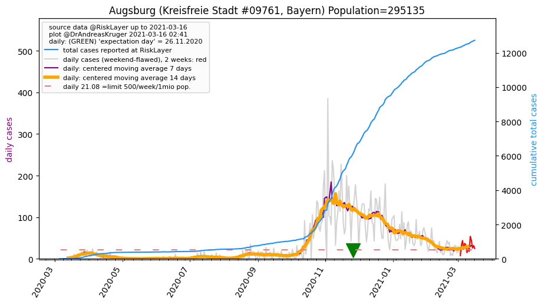
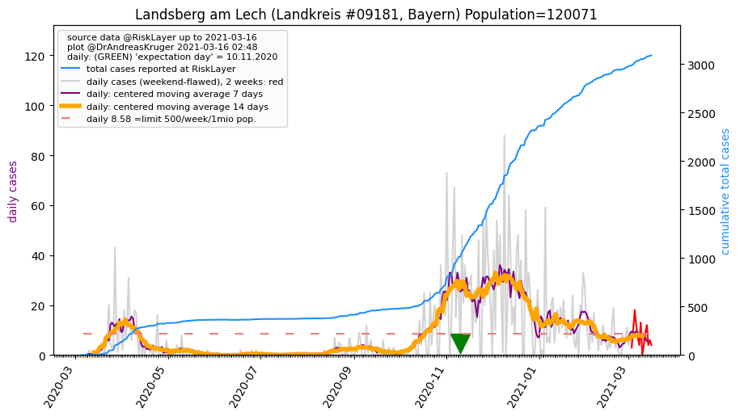
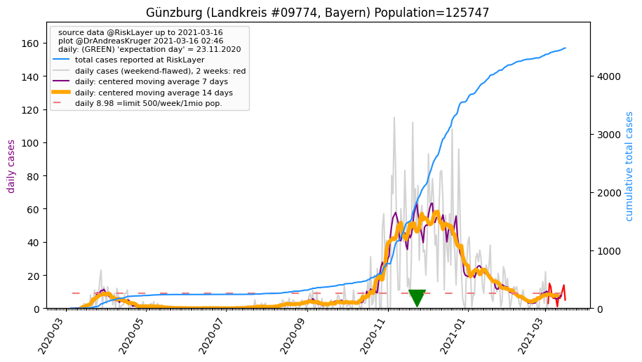
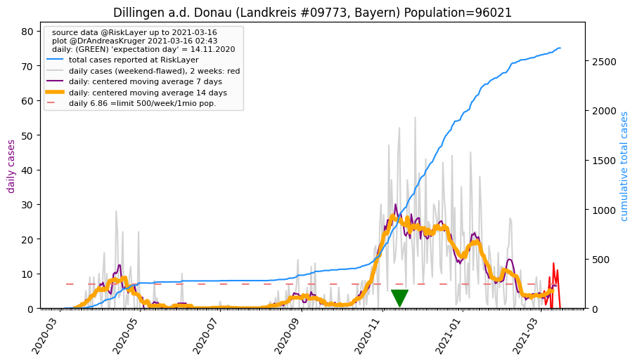
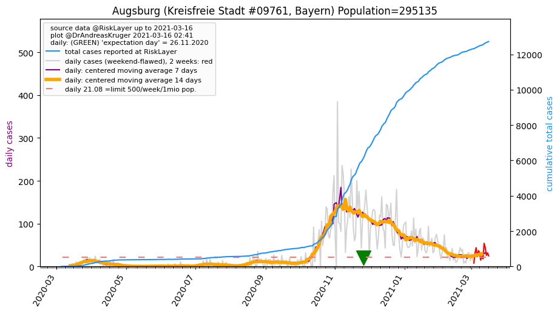
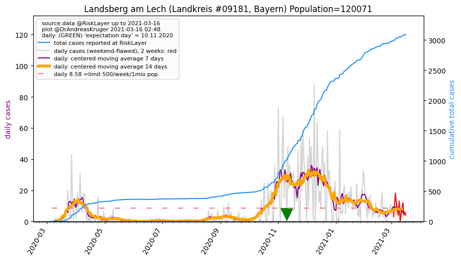
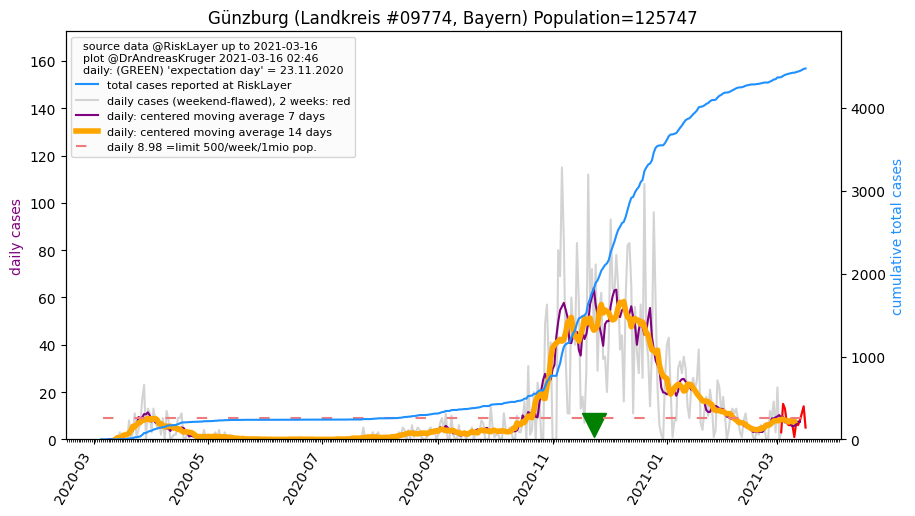
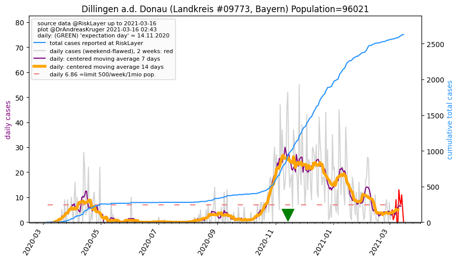

")
")
")
")



")
")
| Augsburg_KS (0.0 km)  |
Augsburg_LK (11.4 km) |
Aichach-Friedberg_LK (15.4 km) |
| Fürstenfeldbruck_LK (29.3 km) |
Dachau_LK (35.0 km) |
Landsberg am Lech_LK (36.0 km)  |
| Günzburg_LK (37.4 km)  |
Dillingen a.d. Donau_LK (38.4 km)  |
Neuburg-Schrobenhausen_LK (42.3 km) |
| Starnberg_LK (47.9 km) |
All plots are regenerated with new data every night. Beware this temporary hotspot is an experimental page - it might get removed, so please do not link to it. Instead link to project http://tiny.cc/cov19de.